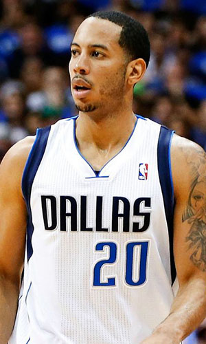

|  |
Матчи |
76 |
|
Передачи (всего/среднее) |
236 |
3.1 |
| В основе |
3 |
|
Подборы в защите (всего/среднее) |
122 |
1.6 |
| Время (всего/среднее) |
1685:07 |
22:10 |
Подборы в атаке (всего/среднее) |
13 |
0.2 |
| Очки (всего/среднее) |
665 |
8.8 |
Подборы (всего/среднее) |
135 |
1.8 |
| 2-очковые броски (всего/среднее) |
124/258 |
1.6/3.4 |
Перехваты (всего/среднее) |
78 |
1 |
| 2-очковые броски (% реализации) |
48.1% |
|
Потери (всего/среднее) |
85 |
1.1 |
| 3-очковые броски (всего/среднее) |
95/266 |
1.3/3.5 |
Блокшоты (всего/среднее) |
14 |
0.2 |
| 3-очковые броски (% реализации) |
35.7% |
|
Блокшоты соперника (всего/среднее) |
21 |
0.3 |
| Штрафные броски (всего/среднее) |
132/162 |
1.7/2.1 |
Фолы (всего/среднее) |
147 |
1.9 |
| Девин Харрис |
Штрафные броски (% реализации) |
81.5% |
|
Коэффициент полезности (всего/среднее) |
540 |
7.1 |